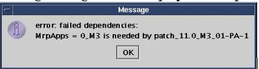
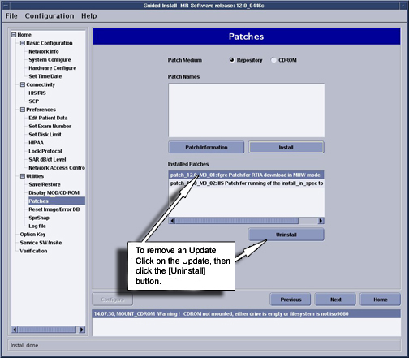

Operating Documentation
Direction 5440001-3, Rev# 6
Signa HDxt Service Methods
Module Version 2.0, Version Date 3/4/08
Operating Documentation |
| Required Persons | Preliminary Reqs | Procedure | Finalization |
|---|---|---|---|
| 1 | Not Applicable | 30 mins | Not Applicable |
This document consist of the following:
| Last Update | 02/19/2007 |
| Condition | Reference | Effectivity |
|---|---|---|
Updates are loaded after MR_Apps and Service Software and Signa Software Is Up and Running | - | - |
Restart the computer by right clicking on mouse, select [Service Tools], then [System Restart]. When prompted to log back in, login name is root, password is operator. Updates should not be loaded with Applications software running.
Click on [Yes] to invoke Guided Install.
Click on [Patches] Tab, then click on [Patches] again in the upper left area of the GUI. See Illustration 1.
Illustration 1: Updates Tab Display

From this GUI we can perform the following tasks:
Determine Updates that have been loaded onto the system disk by selecting [Installed Patches] option
Determine Updates that are on the CD-ROM by selecting [CD-ROM] option.
Determine Updates that have been downloaded to the /usr/g/insite/data via InSite by selecting [Repository] option.
Help files can be viewed if available for Updates on the system, CD-ROM, or in the /usr/g/insite/data directory by selecting the [Patch Information]
There are 2 options for loading Updates, load from Repository or load from CDROM.
To load a Update from Repository (located in /usr/g/insite/data), select [Repository]. The list of applicable Updates that have been downloaded to the site via InSite will appear on the GUI.
To load a Update from CD-ROM, insert the Update CD into the drive on the Linux PC. Select [CD-ROM]. The list of applicable Updates that are on the CD will appear on the GUI.
Click on the applicable patch that you want to load. The Update should be highlighted. See Illustration 2
| NOTE: | You can only load one Update at a time. |
Illustration 2: Selecting and Installing Update

To verify that the Update properly loaded, view Installed Patches section. The Update, if properly loaded will now appear. Also look at the Status section of the Guided Install GUI. A message indicating Patch Load done indicates successful load.
The Update will verify proper software revision and conflict information before loading. If the software revision of the Update does not match the Applications revision, the following message will be displayed. The Update cannot be loaded.
Illustration 3: Failed Dependencies Message

If there are conflicts between Update on the system, and Updates to be loaded, the following message will be displayed.
Patch_tst_M4_01 = PA conflicts with patch_tst_M4_03-PA-1
This means that patch M4_01 (which is loaded on the system) must be deleted before you can load patch M4_03. See next section for updateremoval, Step .
Click on [Installed Updates] section of GUI
Click on the specific Update that you want to remove. The Update will be highlighted.
Click on [Uninstall]. The Update will then be removed. See Illustration 4.
Illustration 4: Removing Updates

If there is a conflict which prevents a Update from being uninstalled, the following message will appear. The conflict must be resolved by possibly removing another Update.
Illustration 5: Uninstall Error Popup

Do a “Good by” scan to insure proper scanner operation.
Cleanup any material that was used during the Update operations.